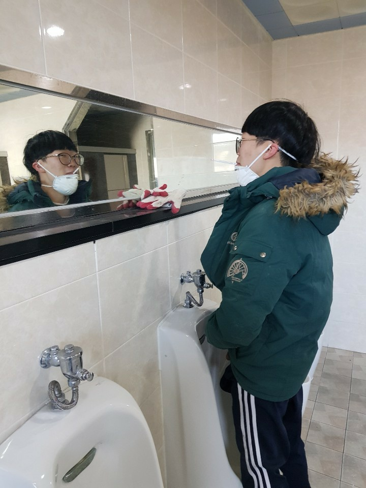

웨이트 트레이닝
검팬 어깨운동
검팬 가슴운동
검팬 등운동
어깨운동의 중요성
사이드 레터럴 레이즈
1) 양발을 어깨넓이 정도로 벌리고, 양손은 덤벨을 잡고 선다.
2) 양팔을 측면으로 어깨 높이까지 들어 올린다. 15~30회를 1세트로 3~5세트 반복.
3) 팔을 쭉 펴는 것은 효과가 좋을 순 있으나 어깨 부상을 당할 위험이 있으니 팔꿈치를 살짝 구부려도 좋다.
(관련영상링크)
검은팬티
준원이의시범동작
